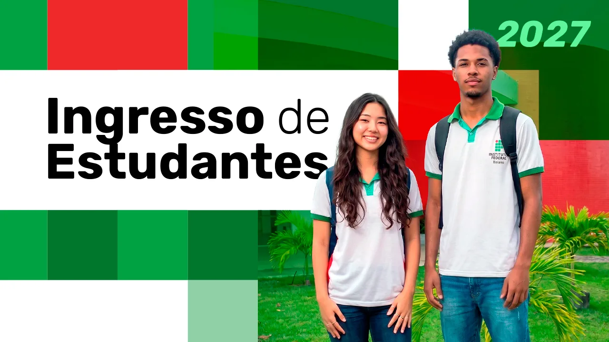
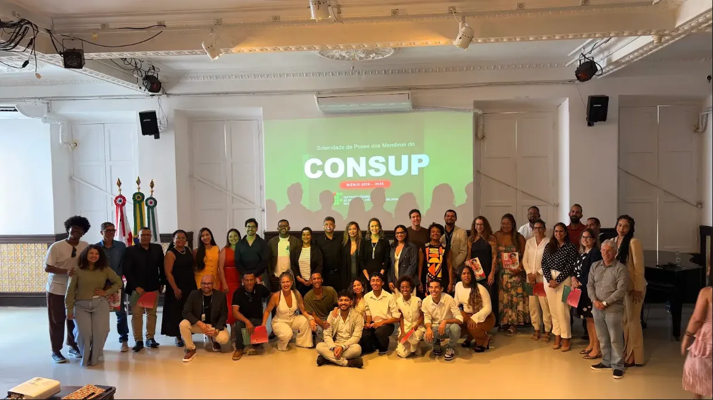
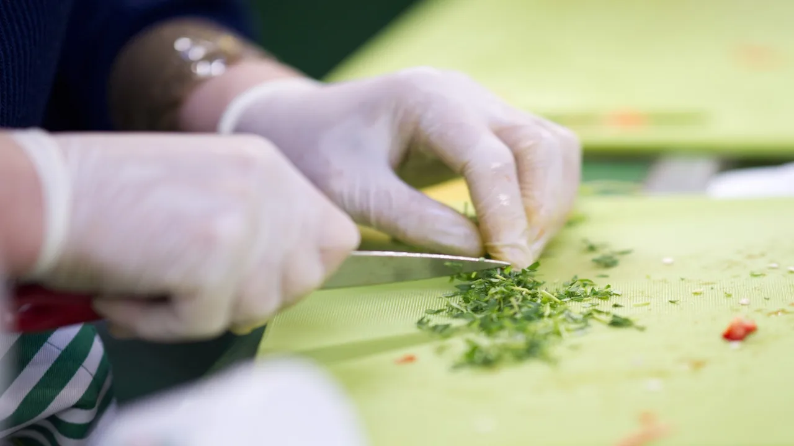

ACONTECE NO IF BAIANO

DESTAQUES

IF Baiano empossa novos representantes do Conselho Superior para o biênio 2026–2028
IF Baiano abre 120 vagas para cursos de qualificação profissional em Ribeira do Pombal

IF Baiano empossa novos representantes do Conselho Superior para o biênio 2026–2028
IF Baiano abre 120 vagas para cursos de qualificação profissional em Ribeira do Pombal